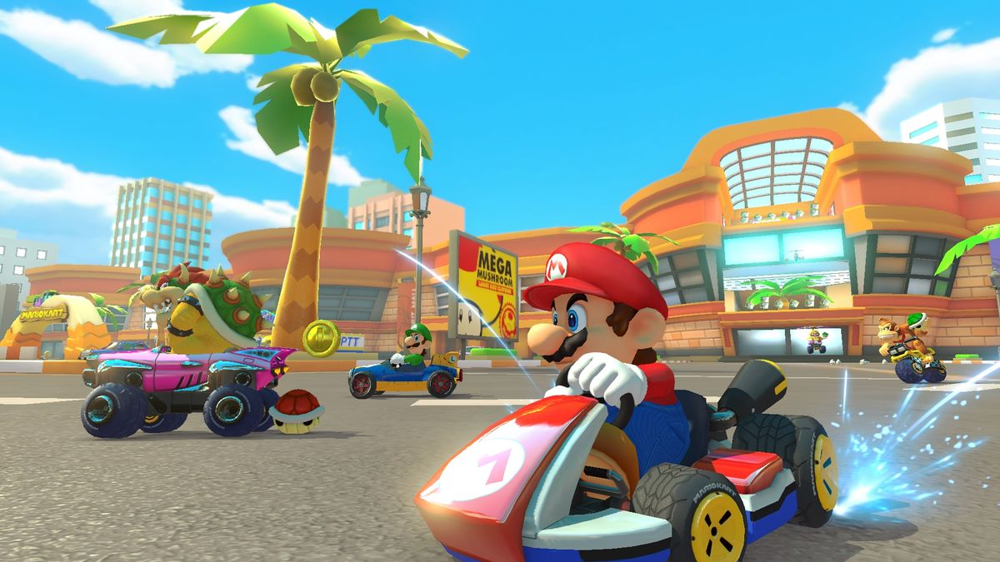
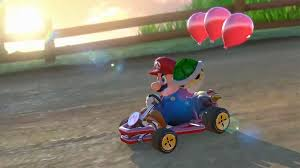

Présentation du jeu
Mario Kart 8 Deluxe est un jeu de course développé et édité par Nintendo, exclusivement disponible sur les consoles Nintendo Switch et Nintendo Switch 2. Il s’agit d’une version enrichie de Mario Kart 8, initialement sorti sur Wii U, intégrant l’ensemble des contenus additionnels publiés après la sortie originale. Le jeu se distingue par une direction artistique colorée, des performances techniques stables avec une fluidité constante, ainsi qu’une prise en main accessible. Grâce à son univers issu de la licence Mario, Mario Kart 8 Deluxe s’adresse à un large public, allant des joueurs occasionnels aux joueurs plus expérimentés. Le jeu est disponible à l'achat en ligne sur le Nintendo Eshop ou en physique dans les magasins.
Modes de jeu
Mario Kart 8 Deluxe propose une grande variété de modes de jeu permettant de renouveler l’expérience du joueur. Le mode Grand Prix constitue le cœur du jeu et permet de participer à des championnats composés de plusieurs courses. Le contre-la-montre offre quant à lui la possibilité d’améliorer ses performances en réalisant le meilleur temps possible. Le mode bataille, réintroduit dans cette version, se déroule dans des arènes spécifiques et propose différents objectifs, tels que la bataille de ballons ou la capture de pièces. Enfin, le jeu dispose d’un mode en ligne permettant d’affronter des joueurs du monde entier.
Personnalisation
Le système de personnalisation de Mario Kart 8 Deluxe permet aux joueurs d’adapter leur expérience de jeu selon leur style de conduite. Il est possible de choisir parmi de nombreux personnages issus de l’univers Mario, ainsi que différents éléments de kart tels que le châssis, les roues et l’aile. Chaque composant influence les statistiques du véhicule, notamment la vitesse, l’accélération, le poids et la maniabilité. Ce système encourage les joueurs à tester différentes combinaisons afin d’optimiser leurs performances selon les circuits et les modes de jeu.
Multijoueur
Le multijoueur constitue un aspect central de Mario Kart 8 Deluxe. Le jeu permet à jusqu’à quatre joueurs de s’affronter en local sur une même console grâce au mode écran partagé. Il est également possible de connecter plusieurs consoles entre elles pour jouer en local sans connexion internet. Le mode en ligne offre quant à lui la possibilité de participer à des courses contre des joueurs du monde entier, renforçant ainsi la dimension compétitive et la rejouabilité du titre.
Compétition et longévité
Mario Kart 8 Deluxe possède une forte dimension compétitive qui contribue à sa longévité. Le système de classement en ligne incite les joueurs à améliorer constamment leurs performances. De plus, la variété des circuits, des personnages et des objets rend chaque course différente. Le jeu est également souvent utilisé lors d’événements, de tournois ou de compétitions amicales, ce qui renforce son statut de référence dans le domaine des jeux de course accessibles.